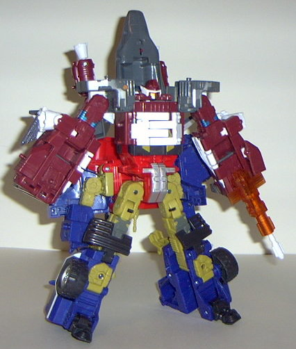

Jetfire
(Energon)
Jetfire
(Energon)
Allegiance
: Autobot
Size
: Mega
Difficulty of Transformation
: Medium
Difficulty of Powerlinx Transformation
:
Hard
Color Scheme
: Rusty dark red, gray,
white, and some orange, transparent orange, black, dull gold, silver, and
metallic aquamarine
Powerlinx ports
: 2
Rating
: 6.9
Jetfire's vehicle mode
is a futuristic space shuttle, and I have to say, I don't have many positive
things to say about this mode. The color scheme goes pretty well together
(although in some areas gets a little dull), and the orange and aquamarine
highlights I especially like. I'm also rather fond of the look of the shuttle
nosecone and the missile launcher under it which you can fire by pressing
the small button on top of the cockpit. (Although it does fire a little
easier than I'd like.) In addition, there are small holes under each of
his side wings that can hold more Autobot Energon weapons. That's really
all the positive things I have to say about this mode, though. The vehicle
mode itself looks pretty crummy- it doesn't really have the same sleekness
as a space shuttle no matter which angle you look at it- and the entire
bottom half of this mode is essentially one big extra. There's little wings
(which are TOO little, proportionally) hanging off the sides, to be sure,
but it does a very bad job of covering up that these are Jetfire's robot
legs. The rocket boosters on the backside are also much smaller than you'd
think would be on a vehicle capable of achieving space flight. (I miss
Armada Jetfire's
big boosters....) It just doesn't
look like it has a snowball's chance in hell of flying. If you don't have
the gun attached to the front of the vehicle mode, there's also a very
big hole in between the two sides of the vehicle, which detracts even more
from the look. Jetfire's two Powerlinx ports are on the sides of the shuttle,
but they're in a bad place- they're planted at a slant to the rest of the
plastic, which means that you won't be able to stick most Minicons on them
all the way because their rear ends will bump into Jetfire's sides too
early. Also, Jetfire is supposed to have a "capture claw" gimmick on the
bottom of his vehicle mode- open the two claws up, then press the button
in between them to have them snap shut. Unfortunately, not only is the
button in such a place where they claws will always snap shut on your fingers,
but the claws CAN'T EXTEND ALL THE WAY OUT unless you unhook Jetfire's
sides in this mode. Definitely very poorly planned. The mold detailing
also leaves a bit to be desired on this figure, although he has a decent
amount of paint apps. Jetfire's gold Powerlinx symbol is on the right side
of his tail fin, and his Autobot spark crystal is on the left side of this
mode, on the top middle portion.
Jetfire's robot mode
is definitely better than his vehicle mode, although it does suffer from
some problems, mainly in the proportions area. His feet are way too large
(although, then again, so were Armada Jetfire's), his hands are too chunky,
and his main body is too wide. All in all, it gives him a rather doofy
look. What's really odd about him, though, is his face- it doesn't really
have any easily discernable eyes, just a transparent orange face plate
and a... nose fin (or whatever that thing on his face is called). He has
some indentations for a visor in this mode, but there's no paint detailing
on it whatsoever, so it's hard to see. His head also hovers a little over
the rest of his chest, due to his sound gimmick. (When you push down on
his head, he emits a high-pitched, sped up "transforming" sound. It's entirely
too sensitive, though, which is why I recommend you take the batteries
out before you play with him.) His shuttle nosecone also hangs rather unceremoniously
off his back, although at least it doesn't get in the way of anything.
Speaking of "anything", Jetfire has some pretty good articulation- he can
move at the hips at two points, at the knees at two points, at the shoulders
at two points, and at the elbows, although the latter point of movement
is on a pretty weak ball joint. So you can get him in a somewhat decent
number of poses. What also becomes obvious in this mode is that his gun
is in the shape of a satellite- I always thought that was a cool feature.
One more odd thing about Jetfire in this mode, though, is that there's
little wings that you're supposed to stick out of the backside of his legs
in this mode that aren't usable in shuttle mode, and they tend to come
off rather easily in this mode. What are they for?


Jetfire's Powerlinx
modes also aren't anything to write home about. As the top half of a Powerlinx
robot, Jetfire looks pretty crummy all around- his hands are merely carved
onto the bottom of his overly large robot mode legs, and his shoulders
are too square. Half of his shuttle mode also just hangs off his back.
If you push down on his head in this mode, though, he emits another high-pitched
"transforming" sound that is a little different from the one he emits in
regular robot mode. It's still too sensitive, though.
As the bottom half of
a Powerlinx robot, Jetfire tends to be quite a bit better. Although he
still has a third of a shuttle hanging off his back, his large legs are
much more convincing on a larger robot, and the wide waist also works much
better when Powerlinxed to another Mega as well.
Energon Jetfire is definitely
a step down from Armada Jetfire in pretty much every department. His vehicle
mode is downright bad, his robot mode is only okay, and his Powerlinx modes
range from so-so to terrible. I'd get pretty much all the other Energon
Megas before this guy if I were you.
Jetfire Bio
:
MOTTO: "Eat my vapor trail."
Jetfire is a skilled and professional
Autobot soldier who has fought alongside Optimus Prime in many battles.
He likes to come across as care free among his Autobot comrades but is
down right serious when fighting Decepticons. He can transform into a powerful
space shuttle and is able to power-linx with Ironhide. A great teacher
in the ways of battle, Jetfire has vowed to shape Ironhide into a seasoned
warrior like himself.
Strength: 8.0
Intelligence: 7.0
Speed: 10.0
Endurance: 8.0
Rank: 10.0
Courage: 9.0
Fireblast: 9.0
Skill: 8.0
Review by Beastbot
Back to Transformers:
Energon Index